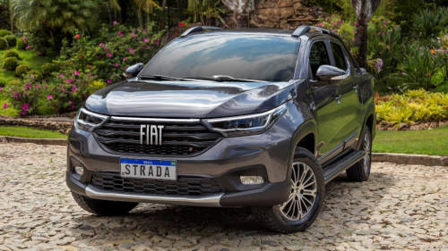

O carro mais vendido do Brasil em 2021
Voltar para a página inicial

Ficha Técnica - Fiat Strada Volcano 2021 1.3 CD
- Motor 4 cilidros, 1.3 Flex, 1.332 cm3
- Potência 109 cv (E) / 101 cv (G) @ 6.250 RPM/6.000 RPM
- Torque 14,2 (E) / 13,7 Kgfm @ 3.500 RPM
- Câmbio Manual de 5 marchas
- Direção Elétrica - raio de giro - 10,8m
- Suspensão Dianteira - McPherson; Traseira - eixo rígido e molas semi-elipticas
- Freios Dianteiro - disco; Traseiro - tambor
- Pneus 205/60 R15
- Peso [Kg] 1.174
Dimensões
- Comprimento 4,48 m
- Largura 1,732 m
- Altura 1,595 m
- Entre-eixos 2,737 m
- Altura livre do solo 23,2 cm
Caçamba